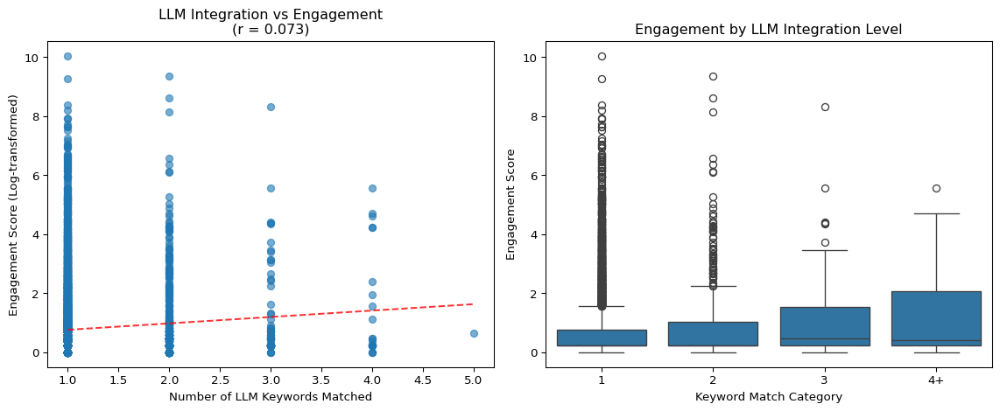
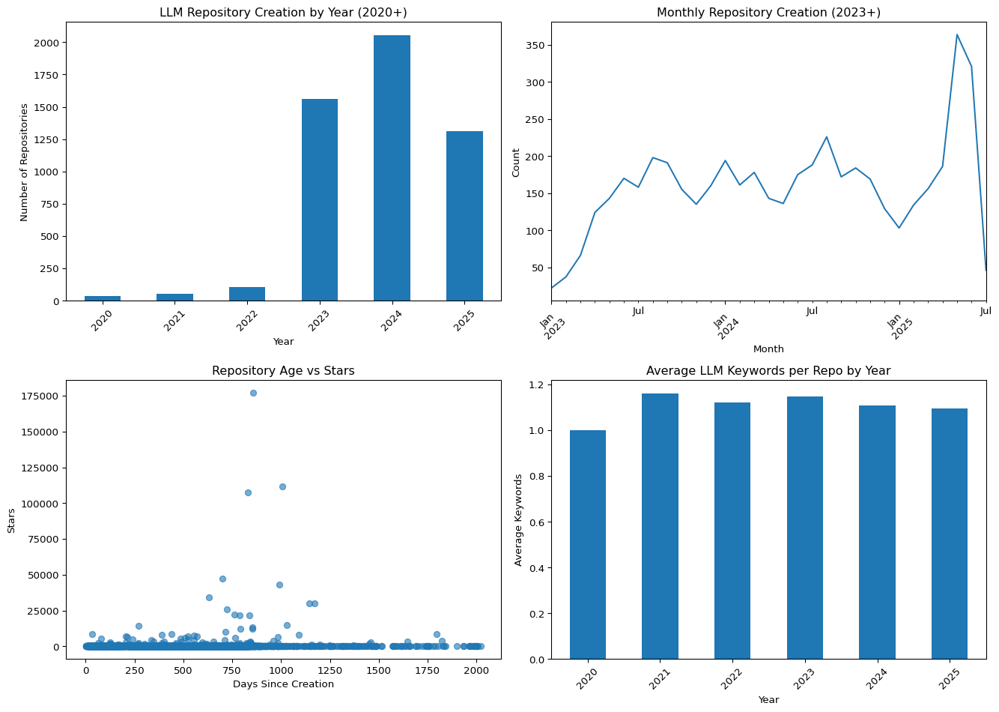

This document contains pilot experiments to validate our research approach and demonstrate the feasibility of analyzing prompt characteristics in relation to project engagement metrics.
Package Installation and Setup
# Check and install required packagesimport sysimport subprocessdef install_if_missing(package, import_name=None):"""Install package if not already present in environment"""try:__import__(import_name or package)print(f"✓ {package} already installed")exceptImportError:print(f"Installing {package}...") subprocess.check_call([sys.executable, "-m", "pip", "install", package])print(f"✓ {package} installed successfully")# Required packages for pilot experimentsrequired_packages = [ ("pandas", None), ("matplotlib", None), ("seaborn", None), ("numpy", None), ("pyyaml", None), ("nbformat", None), ("nbclient", None)]print("Checking and installing required packages...")for package, import_name in required_packages: install_if_missing(package, import_name)print("All packages ready!\n")
import pandas as pdimport jsonimport matplotlib.pyplot as pltimport seaborn as snsimport numpy as npfrom pathlib import Pathfrom datetime import datetimeimport warningswarnings.filterwarnings('ignore')# Load the combined datasetwithopen("../data/combined_repository_data.json", "r") as f: data = json.load(f)df = pd.DataFrame(data)# Convert and sanitize datetime columnsfor col in ['created_at', 'updated_at', 'pushed_at']: df[col] = pd.to_datetime(df[col], errors='coerce').dt.tz_localize(None)print(f"Loaded {len(df)} repositories with combined keyword and metadata information")df.head()
Loaded 5256 repositories with combined keyword and metadata information
repository
keyword_count
keywords_matched
files_matched
sample_urls
description
stars
forks
watchers
open_issues
default_branch
created_at
updated_at
pushed_at
language
license
html_url
0
hidevscommunity/gen-ai-apps
5
[AutoGPT, HuggingFaceHub, LLMChain, RetrievalQ...
[Autonomousagent/application/backend/agent.py,...
[https://github.com/hidevscommunity/gen-ai-app...
None
6
0
0
0
main
2023-10-05 14:42:22
2025-07-05 06:32:10
2024-08-01 18:44:10
Jupyter Notebook
MIT License
https://github.com/hidevscommunity/gen-ai-apps
1
ayusuf9/Augment-Chains
4
[FAISS, PromptTemplate, RetrievalQA, from lang...
[ethiopy_table.py, newstreamlit_v2.py, v4.py]
[https://github.com/ayusuf9/Augment-Chains/blo...
None
0
0
1
0
main
2024-10-01 21:50:12
2024-12-19 07:27:29
2024-12-19 07:27:25
Python
None
https://github.com/ayusuf9/Augment-Chains
2
jaredcrace/cracecasts
4
[Chroma, LLMChain, PromptTemplate, llamacpp]
[examples/llama_local_code_reading/main.py]
[https://github.com/jaredcrace/cracecasts/blob...
Repository for CraceCasts YouTube channel
31
9
3
0
main
2023-09-04 16:46:01
2025-02-22 12:41:03
2024-01-15 04:11:44
None
None
https://github.com/jaredcrace/cracecasts
3
himanshu662000/InfoGPT
4
[ChatOpenAI, Chroma, from langchain.chat_model...
[ui.py]
[https://github.com/himanshu662000/InfoGPT/blo...
Introducing My New Chatbot: Your Document Answ...
28
3
2
0
main
2023-09-21 22:29:23
2024-10-24 20:52:37
2023-09-23 20:32:56
Python
None
https://github.com/himanshu662000/InfoGPT
4
amaze18/speeKAR
4
[FAISS, from langchain.chat_models, from langc...
[qa.py]
[https://github.com/amaze18/speeKAR/blob/0d12f...
Keyword Augmented Retrieval: Novel framework f...
4
2
1
1
main
2023-09-28 17:27:32
2025-04-09 11:46:32
2024-04-13 17:11:22
Python
Other
https://github.com/amaze18/speeKAR
Pilot Experiment 1: Repository Relevance Distribution
Objective: Validate that our keyword-based approach successfully identified repositories with varying degrees of LLM integration.
# Analyze keyword match distributionkeyword_counts = df['keyword_count'].value_counts().sort_index()plt.figure(figsize=(10, 6))keyword_counts.plot(kind='bar')plt.title('Repositories by Keyword Match Count')plt.xlabel('Number of LLM Keywords Matched')plt.ylabel('Number of Repositories')plt.xticks(rotation=0)plt.tight_layout()plt.show()
Pilot Experiment 2: Project Engagement Indicators
Objective: Examine the distribution of engagement metrics and identify potential relationships with LLM integration depth.
# Clean and analyze engagement metricsengagement_cols = ['stars', 'forks', 'watchers', 'open_issues']df_clean = df.dropna(subset=engagement_cols)# Log-transform for better visualization (add 1 to handle zeros)for col in engagement_cols: df_clean[f'log_{col}'] = np.log1p(df_clean[col])# Create engagement visualizationsfig, axes = plt.subplots(2, 2, figsize=(12, 10))axes = axes.ravel()for i, col inenumerate(engagement_cols): axes[i].hist(df_clean[f'log_{col}'], bins=30, alpha=0.7, edgecolor='black') axes[i].set_title(f'Log({col.title()}+1) Distribution') axes[i].set_xlabel(f'Log({col}+1)') axes[i].set_ylabel('Frequency')plt.tight_layout()plt.show()# Summary statisticsprint("Engagement Metrics Summary:")print(df_clean[engagement_cols].describe())
Pilot Experiment 3: LLM Integration vs Project Popularity
Objective: Initial exploration of whether repositories with more LLM keywords show different engagement patterns.
# Create engagement score composite metricdf_clean['engagement_score'] = ( df_clean['log_stars'] + df_clean['log_forks'] + df_clean['log_watchers']) /3# Analyze relationship between keyword count and engagementcorrelation = df_clean['keyword_count'].corr(df_clean['engagement_score'])plt.figure(figsize=(12, 5))plt.subplot(1, 2, 1)plt.scatter(df_clean['keyword_count'], df_clean['engagement_score'], alpha=0.6)plt.xlabel('Number of LLM Keywords Matched')plt.ylabel('Engagement Score (Log-transformed)')plt.title(f'LLM Integration vs Engagement\n(r = {correlation:.3f})')# Add trend linez = np.polyfit(df_clean['keyword_count'], df_clean['engagement_score'], 1)p = np.poly1d(z)plt.plot(df_clean['keyword_count'].sort_values(), p(df_clean['keyword_count'].sort_values()), "r--", alpha=0.8)plt.subplot(1, 2, 2)# Box plot for different keyword count categorieskeyword_categories = pd.cut(df_clean['keyword_count'], bins=[0, 1, 2, 3, float('inf')], labels=['1', '2', '3', '4+'])df_clean['keyword_category'] = keyword_categoriessns.boxplot(data=df_clean, x='keyword_category', y='engagement_score')plt.xlabel('Keyword Match Category')plt.ylabel('Engagement Score')plt.title('Engagement by LLM Integration Level')plt.tight_layout()plt.show()print(f"Correlation between keyword count and engagement: {correlation:.4f}")

Correlation between keyword count and engagement: 0.0734
Pilot Experiment 4: Keyword Pattern Analysis
Objective: Identify which LLM-related keywords are most common and examine co-occurrence patterns.
# Extract and analyze individual keywordsall_keywords = []for keywords_list in df['keywords_matched']:ifisinstance(keywords_list, list): all_keywords.extend(keywords_list)keyword_frequency = pd.Series(all_keywords).value_counts()plt.figure(figsize=(14, 8))plt.subplot(2, 1, 1)keyword_frequency.head(15).plot(kind='barh')plt.title('Top 15 Most Common LLM Keywords')plt.xlabel('Frequency')plt.subplot(2, 1, 2)# Show keyword co-occurrence for high-engagement reposhigh_engagement = df_clean[df_clean['engagement_score'] > df_clean['engagement_score'].quantile(0.75)]high_eng_keywords = []for keywords_list in high_engagement['keywords_matched']:ifisinstance(keywords_list, list): high_eng_keywords.extend(keywords_list)high_eng_freq = pd.Series(high_eng_keywords).value_counts()high_eng_freq.head(10).plot(kind='barh', color='orange')plt.title('Top 10 Keywords in High-Engagement Repositories')plt.xlabel('Frequency')plt.tight_layout()plt.show()print("Most common keywords overall:")print(keyword_frequency.head(10))print(f"\nMost common keywords in high-engagement repos:")print(high_eng_freq.head(10))
Most common keywords overall:
openai.Completion.create 250
FAISS 248
LLMChain 248
vectordb 248
PromptTemplate 247
from langchain.chat_models 247
Anthropic 247
from langchain.llms 246
"prompt=" 246
HuggingFaceHub 245
Name: count, dtype: int64
Most common keywords in high-engagement repos:
Anthropic 102
"prompt=" 96
"prompt = " 89
Claude 82
transformers.pipeline 79
AutoGPT 77
llama_cpp 74
llamacpp 73
CrewAI 70
Chroma 67
Name: count, dtype: int64
Pilot Experiment 5: Repository Activity Timeline
Objective: Examine temporal patterns in LLM repository creation and updates.
# Convert timestamps to datetimedate_cols = ['created_at', 'updated_at', 'pushed_at']for col in date_cols: df[col] = pd.to_datetime(df[col])# Extract creation year and monthdf['created_year'] = df['created_at'].dt.yeardf['created_month'] = df['created_at'].dt.to_period('M')# Filter to recent years for meaningful analysisrecent_df = df[df['created_year'] >=2020].copy()plt.figure(figsize=(14, 10))plt.subplot(2, 2, 1)creation_by_year = recent_df['created_year'].value_counts().sort_index()creation_by_year.plot(kind='bar')plt.title('LLM Repository Creation by Year (2020+)')plt.xlabel('Year')plt.ylabel('Number of Repositories')plt.xticks(rotation=45)plt.subplot(2, 2, 2)# Monthly creation trend for 2023-2024recent_months = recent_df[recent_df['created_year'] >=2023]['created_month'].value_counts().sort_index()recent_months.plot()plt.title('Monthly Repository Creation (2023+)')plt.xlabel('Month')plt.ylabel('Count')plt.xticks(rotation=45)plt.subplot(2, 2, 3)# Relationship between creation date and engagementnow = pd.Timestamp.utcnow().tz_localize(None)recent_df['days_since_creation'] = (now - recent_df['created_at']).dt.daysplt.scatter(recent_df['days_since_creation'], recent_df['stars'], alpha=0.6)plt.xlabel('Days Since Creation')plt.ylabel('Stars')plt.title('Repository Age vs Stars')plt.subplot(2, 2, 4)# LLM keyword trends over timeyearly_keywords = recent_df.groupby('created_year')['keyword_count'].mean()yearly_keywords.plot(kind='bar')plt.title('Average LLM Keywords per Repo by Year')plt.xlabel('Year')plt.ylabel('Average Keywords')plt.xticks(rotation=45)plt.tight_layout()plt.show()

Key Findings and Research Feasibility
print("=== PILOT EXPERIMENT SUMMARY ===\n")print("1. DATA QUALITY AND COVERAGE:")print(f" - Successfully identified {len(df)} LLM-integrated repositories")print(f" - Keyword matches range from {df['keyword_count'].min()} to {df['keyword_count'].max()}")print(f" - {len(df_clean)} repositories have complete engagement metrics")print(f"\n2. ENGAGEMENT METRIC VIABILITY:")print(f" - Stars range: 0 to {df['stars'].max():,}")print(f" - Forks range: 0 to {df['forks'].max():,}")print(f" - Clear variation in engagement levels enables comparative analysis")print(f"\n3. PRELIMINARY CORRELATIONS:")print(f" - Keyword count vs engagement correlation: {correlation:.4f}")ifabs(correlation) >0.1:print(f" - Suggests {('positive'if correlation >0else'negative')} relationship worth investigating")else:print(f" - Weak correlation suggests complex relationship requiring deeper analysis")print(f"\n4. TEMPORAL PATTERNS:")print(f" - Repository creation spans {recent_df['created_year'].min()} to {recent_df['created_year'].max()}")print(f" - Recent surge in 2023+ aligns with LLM mainstream adoption")print(f"\n5. RESEARCH FEASIBILITY:")print(f" ✓ Sufficient repository sample size for statistical analysis")print(f" ✓ Clear variation in both LLM integration and engagement metrics")print(f" ✓ Identifiable keyword patterns for prompt classification")print(f" ✓ Temporal data enables evolution analysis")print(f" → Ready to proceed with full prompt extraction and analysis")
=== PILOT EXPERIMENT SUMMARY ===
1. DATA QUALITY AND COVERAGE:
- Successfully identified 5256 LLM-integrated repositories
- Keyword matches range from 1 to 5
- 5256 repositories have complete engagement metrics
2. ENGAGEMENT METRIC VIABILITY:
- Stars range: 0 to 177,018
- Forks range: 0 to 45,885
- Clear variation in engagement levels enables comparative analysis
3. PRELIMINARY CORRELATIONS:
- Keyword count vs engagement correlation: 0.0734
- Weak correlation suggests complex relationship requiring deeper analysis
4. TEMPORAL PATTERNS:
- Repository creation spans 2020 to 2025
- Recent surge in 2023+ aligns with LLM mainstream adoption
5. RESEARCH FEASIBILITY:
✓ Sufficient repository sample size for statistical analysis
✓ Clear variation in both LLM integration and engagement metrics
✓ Identifiable keyword patterns for prompt classification
✓ Temporal data enables evolution analysis
→ Ready to proceed with full prompt extraction and analysis
Next Steps for Full Study
Based on these pilot experiments, the following steps are validated as feasible:
Prompt Extraction: Use file paths from files_matched to extract actual prompt strings
Prompt Classification: Apply taxonomies (zero-shot, few-shot, chain-of-thought) to extracted prompts
Advanced Metrics: Calculate prompt complexity, reuse patterns, and collaborative authorship
Statistical Analysis: Test correlations between prompt characteristics and engagement metrics
Temporal Analysis: Track prompt evolution over repository lifecycle
The pilot demonstrates that our data collection approach successfully captured a diverse set of LLM-integrated repositories with sufficient variation in both technical characteristics and community engagement to support meaningful analysis.